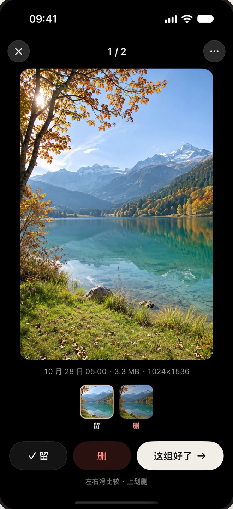
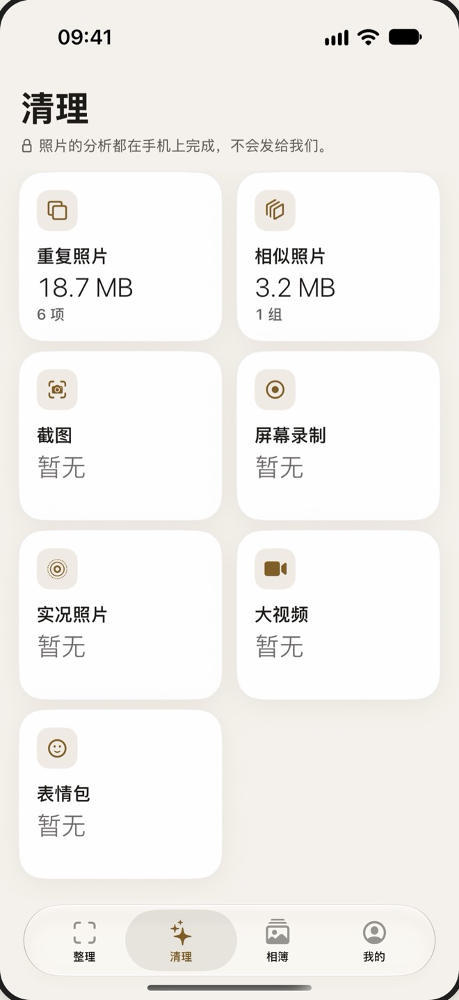
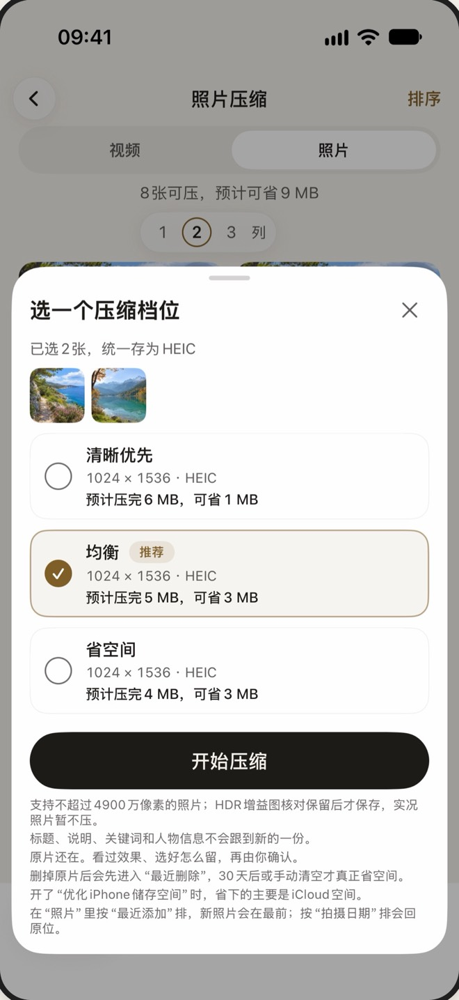

连拍十张，帮你挑出最好的
相似的照片归成一组，推荐留哪张；你确认了才动。
ZenPic · 淘片 · 给上课的人
自动框出屏幕、拉正，一键合成一份。不用电脑，照片不上传。
01 · In class
老师不发 PPT，只能举着手机拍。
讲义又厚又重，用完就不知道放哪了。
板书没有课件，下课就擦了。
想理成电子版：有的工具一次只能放几十张，有的还得先传到电脑，好用的又多半要收费。
拍下来，在 iPhone 上就能理成一份 PDF
02 · Photo to PDF
按上课的日子把照片挑出来。拍歪了、带着天花板和前排后脑勺，都没关系。
框不准，就拖一下四个角，有放大镜帮你对准。
按拍的先后排好，点一下就生成。不用电脑。
PDF 存好，原照片一键清掉，空间腾出来。清空“最近删除”后，空间才真正腾出来。
03 · Photos
和同学的合影、孩子的每一天、家人的旅行，每张都舍不得删。可连拍、重复、拍糊的也混在里面，好照片反而被埋没。
划一下，留还是删。上滑删除，下拉收藏，左右翻看，滑错了能撤销。

这台手机能滑，试试看↑上滑删除↓下拉收藏↔左右翻看
删之前，再看一眼。删掉的照片先待在淘片回收站，你确认后才交给系统。系统删之前还会再问一次，之后在“最近删除”里再放 30 天。
保留0收藏0还剩6
04 · Clear the clutter
重复、相似、截图、大视频，各归各类。建议先列好，你看过再定。

相似的照片归成一组，推荐留哪张；你确认了才动。

重复、相似、截图、屏幕录制、实况照片、大视频、表情包，分开列出来。

三档任选，照片也能压。压好的另存一份，原片不动，看过再决定留哪份。

出门前把 iCloud 里的照片存一份到手机，飞机上、地铁里一样能理。存的是缩小的图，用来看和整理。
05 · Privacy
整理和分析都在你的 iPhone 上完成。
地图、地名和地址搜索由 Apple 地图提供，你看的地点和搜的文字会发给 Apple。iCloud 照片还是照你原来的设置工作。
看隐私政策全文 →06 · Classmates
干脆用 AI 给自己做了个 App。不只 EMBA，只要还在上课，都用得上。
Classmate
港大 EMBA 7A 班同学专享 · Premium
高级版免费用半年，不限张数怎么领找发这个页面给你的同学要海报，长按二维码就能领。
半年后按年费自动续，不想续随时在 iPhone「设置」里取消。已经有终身版的同学不用再领。
回忆留下，资料存档，
手机腾出来了